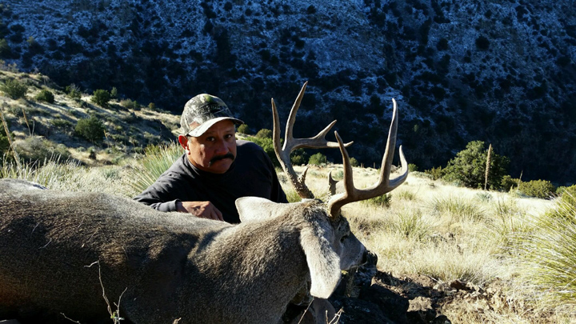
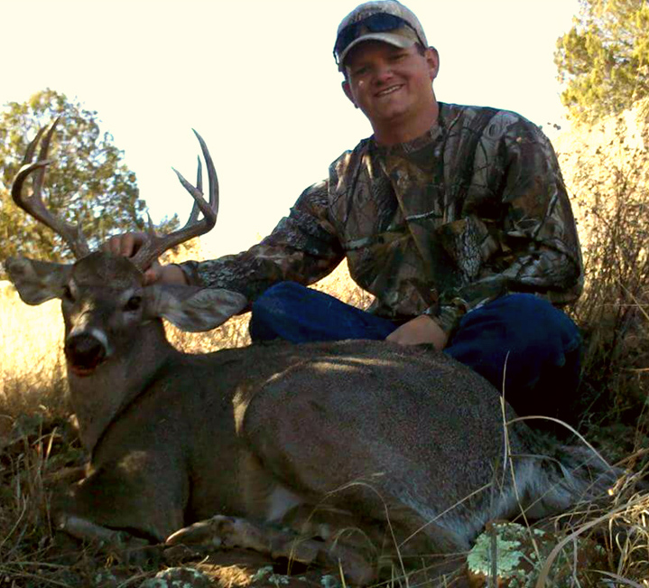
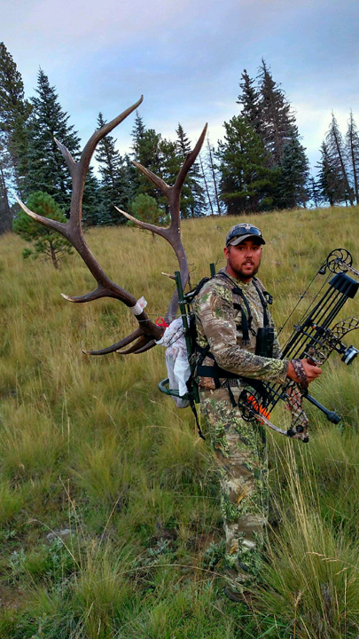
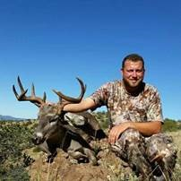

Josh Marin
I’m Arizona born and raised! I have been hunting the deserts and mountains of Arizona since the time I was able to pull on my boots. I have grown up on the Twin C Ranch and sat a saddle since I was 4 years old. Hunting is my passion! I have hunted off of horseback and mules my whole life and packed out everything from lion and bear to deer and elk. I am very fortunate to have the knowledge passed down to me from my family and friends. I am blessed to have a wife Nikki that is super supportive and shares the same passion as me. I have to keep her posted about every hour on our hunts on what we have seen or shot. She has temporarily sacrificed some of her hunting time to give me the four most beautiful angels, Alyza, Shaysea, Paisley, and Syvanna. Four gals that want to do nothing but shoot their bows and BB guns. My brother in law Armand and I decided to start up this outfitting company to give us the opportunity to help people harvest trophy class game. We have spent countless hours scouting and finding trophy class animals with no one to pull the trigger. We figured if we couldn’t draw the tags we want to be with someone who did! There’s no better feeling than glassing up that big coues deer hidden in the brush, stocking in close to that big black bear or watching a string of bulls ridge out straight at you. Our guides and us are equipped, experienced, and dedicated to helping you put the trophy of a lifetime on your wall and memories that will last forever.
Armand Morales
I am a born and raised Arizona resident who has been addicted to hunting since the first time my dad took me out to the hills as a kid. Most of my skills were learned from him and the memories we share in the hills cannot be replaced. I currently reside in Morenci, Arizona and work as a Powerline Electrician in the copper mine. I have one daughter, Kensey, and a beautiful wife named Brieanna who supports my crazy habit 100%. Throughout my hunting career I have been fortunate enough to harvest several trophy quality animals including, Bull Elk, Coues Whitetail Deer, Mule Deer, and Black Bear. In recent years I have grown to appreciate helping other hunters be successful and that is what inspired me to co-create this unique outfitting service. My partner, my guides, and myself pride ourselves in putting forth the extra effort it takes to make a good hunt a great one. I spend hours, days, weeks, and months a year in the mountains I hunt. Between horseback riding, shed hunting, and running trail cameras I am able to consistently learn areas that offer great opportunities for a successful hunt. I have a strong passion for rifles and reloading which has a direct positive impact on hunts I am involved in. Our outfit offers quality hunts and our efforts cannot be beat.
Bryan Burkhead
 I moved from Playas, NM to Morenci, AZ in the year 2000 and I have been hunting units 27 and unit 1 for 16 years now, harvesting many trophy animals since. As a kid growing up I was lucky enough to have my dad, who is an avid hunter and outdoorsman himself teach me at a young age, how to hunt, fish and to be an outdoorsman. Ever since I was a kid, I have been fascinated with anything involving the outdoors. Whether it be hunting for a monster Desert Muley buck, chasing around the infamous (grey ghost) trophy Coues buck, being on the trail of a screaming trophy bull elk, or just getting out and glassing we are there. During the off season, I stay busy, camping, fishing, scouting, putting up trail cameras, looking for new hunting locations or hunting for sheds. I married my beautiful wife Cheri, who also shares the same passion for hunting and the outdoors as I do. Cheri grew up in Morenci and she has also been a hunter all of her life. We have two children, Brennen and Brody who are also growing up to be avid outdoors people. Easy going and open minded personality’s makes us easily adapt to any hunters style or situation to give you the best odds for success. Hunting is our way of life and we will do our absolute very best to make your hunt the most successful and the most memorable hunt of a lifetime.
I moved from Playas, NM to Morenci, AZ in the year 2000 and I have been hunting units 27 and unit 1 for 16 years now, harvesting many trophy animals since. As a kid growing up I was lucky enough to have my dad, who is an avid hunter and outdoorsman himself teach me at a young age, how to hunt, fish and to be an outdoorsman. Ever since I was a kid, I have been fascinated with anything involving the outdoors. Whether it be hunting for a monster Desert Muley buck, chasing around the infamous (grey ghost) trophy Coues buck, being on the trail of a screaming trophy bull elk, or just getting out and glassing we are there. During the off season, I stay busy, camping, fishing, scouting, putting up trail cameras, looking for new hunting locations or hunting for sheds. I married my beautiful wife Cheri, who also shares the same passion for hunting and the outdoors as I do. Cheri grew up in Morenci and she has also been a hunter all of her life. We have two children, Brennen and Brody who are also growing up to be avid outdoors people. Easy going and open minded personality’s makes us easily adapt to any hunters style or situation to give you the best odds for success. Hunting is our way of life and we will do our absolute very best to make your hunt the most successful and the most memorable hunt of a lifetime.
Shawn Windsor
I am born and raised in Safford, AZ and still live here to this day. Being a country boy at heart, I fell in love with the outdoors at a very young age. Hunting became my strongest passion. I have been hunting for over twenty years and I still get just as excited for hunting season as if it was my first hunt at ten years old. I am the youngest of three boys and was fortunate enough to learn from my father and two older brothers, who are also very passionate and knowledgeable about hunting. Hunting not only became a passion but a way of life. From glassing endless hours for the elusive grey ghost (Coues), chasing the monster desert mule deer with my bow, to the screaming bugles in the rut, the excitement never goes away! I have been hiking the hills of units 31 and 32 since I was able to strap on my boots and have been fortunate enough to harvest many trophies in these units over the years. My wife Micah, blessed me with two beautiful girls, Roxi and Quinn. We are a family that loves the outdoors, whether it's hunting, fishing, camping, or scouting. I am very dedicated to successful hunts whether it be my own, my family, or friends. I am always researching maps and scouting to find new areas of big trophies. I have spent countless hours behind my binos scanning through the juniper and cacti for a flicker of an ear or the glistening of a hide. With hard work and years of experience we will do our very best to provide a hunt as memorable as your first. We will dedicate our time to ensure you receive fun unforgettable memories and a hunt of a lifetime!
Dustin Pollock
My name is Dustin Pollock and I am a 26 year Arizona Native! I have been blessed to have been raised hunting and the obsession has not stopped since my first deer kill at 10 years old. Hunting to me is a way of life. It is not just about the kill, but the experience of being in God’s country with your family and friends, pushing your body and mind to the limit trying to find the trophy of your dreams. I have 16 years of hunting experience and I excel in glassing, and the ability to stalk in close for an ethical shot. I give 100% while preparing for hunts and put in extra homework time to increase the odds of a successful hunt. Nothing beats seeing the smiles and reactions from a successful hunter you helped. That is what fuels my passion and makes all the hard work worth it.
Gabe Corona
I have been hunting units 27, 28, and 1 since I was 6 years old. I have harvested trophy class mule deer, coues deer, and elk in these units. I enjoy everything outdoors whether it be hunting, fishing, camping, shed hunting, or scouting. Whether it be hiking for miles a day or glassing patiently for the flicker of an ear or blink of an eye, I am able to adapt to any hunting style to accommodate a hunter’s needs.
David Brown
I have been around hunting since as early as I can remember. I grew up in a family where hunting was passed on from generation to generation. I have hunted, guided, and have knowledge in many Arizona units including: 27, 28,31, and 32. I enjoy the outdoors and helping people earn their trophy, whether it be family, friends, or a new face. I am able to adapt to accommodate any hunter. We are a great bunch of guys with plenty of knowledge and experience to help you achieve your goals. Looking forward to seeing you out in the hills!
Roy Morales
 I am a lifetime Arizona resident and have been hunting big game in Arizona for over 40 years. My wife, Bertha, and I have 6 children and so far 13 grandchildren. Over the years I have been able to adapt hunting styles and strategies to go along with the ever changing technologies in the hunting industry. Even though I have harvested countless animals in my hunting career I can remember and appreciate every hunt. My biggest hunting success is no doubt the cherished moments I am able to spend with my kids. There is something special about time spent in the outdoors with loved ones. I have a vast knowledge of hunting only gained from experience. I enjoy getting into the backcountry areas away from the crowds while on my horses or mules.
Bubba Jones
 I am from Morenci AZ I have lived here most of my life and had the pleasure of enjoying and learning much of southwest AZ and all it has to offer. I was blessed with great family and friends to show me the outdoors and teach me the way of life we all love and cherish. I have a passion for all outdoor activities but hunting is definitely my greatest. I was blessed with a wife and children that share the same love of the outdoors. At this point in my life I get as much excitement finding and watching family and others take their trophy. Choosing to boys at DEADFALL OUTFITTERS, your dream trophy will become reality. All the crew will work there hardest to help fulfill your dreams and treat you as family.
Roylee Wyatt
 I have hunted in the hills of units 1 and 27 all my life. My grandpa and dad have been taking me on hunts with them since I was a very young kid, long before I was old enough to hunt myself. Over the years I have gained a lot of knowledge on everything that has to do with hunting and scouting. Through my years of hunting I have been lucky enough to harvest many Coues Whitetail and Mule Deer. I also have been fortunate enough to draw 3 Arizona Archery bull elk tags and harvested 3 world class bulls with my bow. Let me tell you there is nothing like having a big bull elk in the rut screaming in your face. It’s definitely an experience of a lifetime. I have been on numerous hunts with friends and family and have been able to be a part of taking a lot of big game animals in units 1 and 27. I will use my knowledge, hard work and time to assure you that you would have a great experience on hunts with us.
Robert Baker
 My name is Robert Baker, I was born and raised in Morenci Arizona. I have a love for the outdoors that keeps me coming back for more. I have found a passion for hunting Big game and small game in Southeastern Arizona units (1, 27, 28, 31, and 32). I strive to put in as much time in the outdoors to find trophy animals for family, friends, and future clients of the Dead Fall Outfitters.